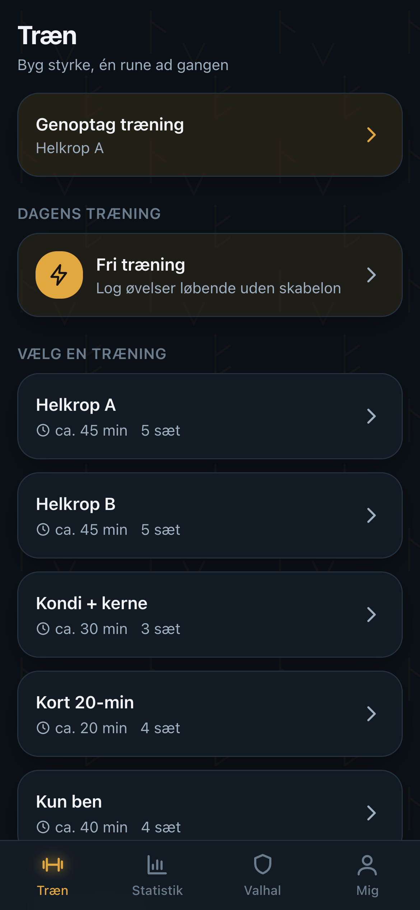
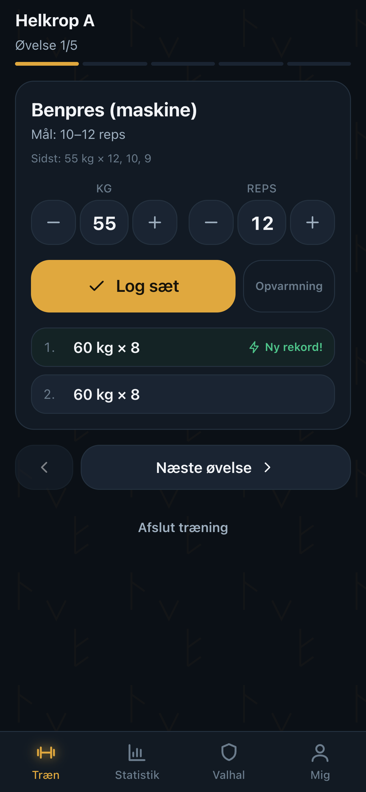
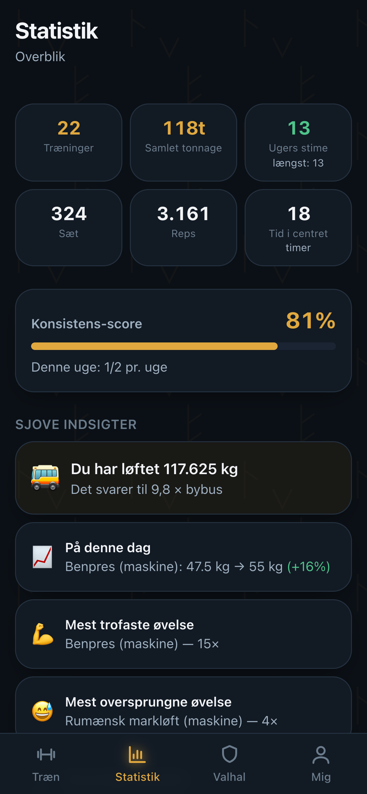
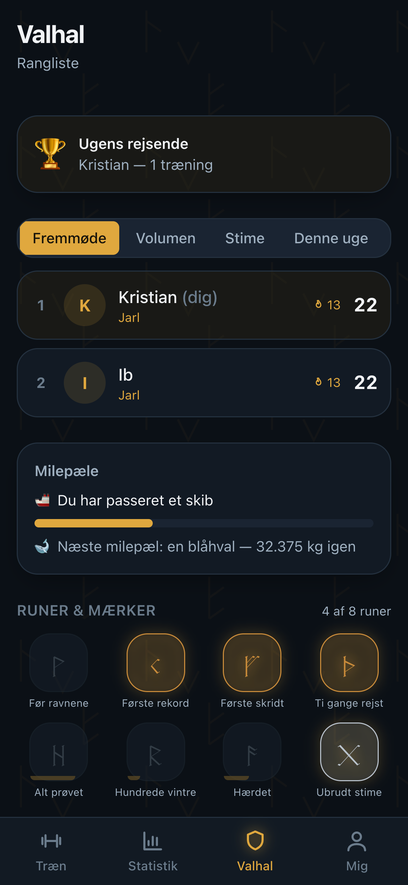
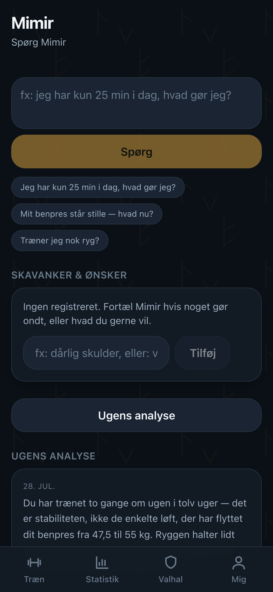
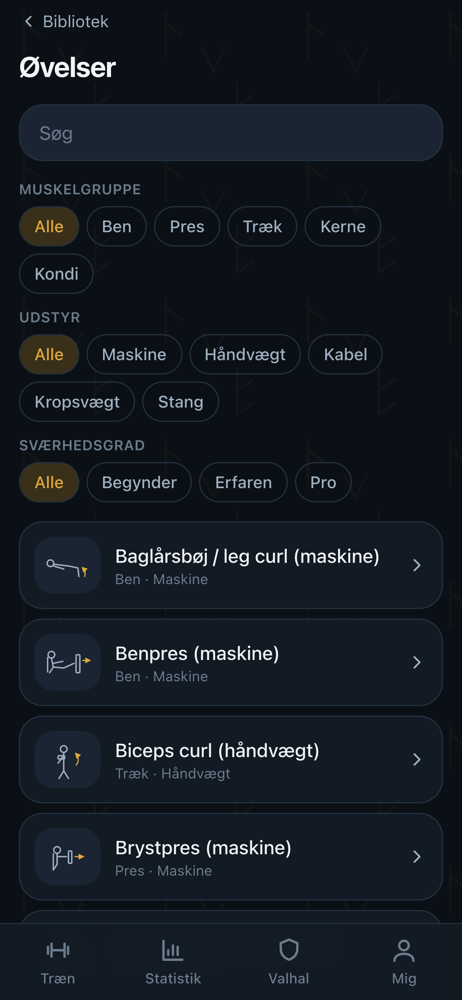

En træningsapp til iPhone og web, bygget til at bruges med én hånd og svedige fingre. Sæt logges på under to sekunder — også når der ikke er et gram signal i kælderen under centret.
⚠️ Tidlig udvikling, bygget med Claude Code. Uruz stilles til rådighed som den er — uden nogen form for garanti og uden noget ansvar overhovedet. Du bruger den udelukkende på eget ansvar.
Billederne herunder er taget af appen selv med tolv ugers demo-træning i databasen — ikke tegnet, ikke pyntet, og ikke nogens rigtige træningslog.






Kernen er lynhurtig registrering og ærlig statistik. Det nordiske lag er krydderi, aldrig gimmick: det kan skrues helt ned til rene tal med ét tryk.
Vægt og reps er forudfyldt fra sidste gang, så du som regel bare bekræfter. Hviletimeren starter selv, og rekorder fejres i samme øjeblik.
Hvert sæt gemmes lokalt først og synkroniserer af sig selv, når signalet er tilbage. Ingen spinner, ingen tabte sæt, ingen undskyldninger.
Fremgang pr. øvelse, tonnage, fremmøde-kalender og muskelbalance — plus sjove indsigter som holder motivationen oppe.
Ugentlig analyse ud fra dine egne tal, en chat du kan spørge til råds — og evnen til at tilpasse træningen når noget gør ondt.
Runer at låse op, rangorden fra Thræl til Einherjer, milepæle og en venlig kappestrid mellem jer i hallen.
Ravnene husker for dig: reminders på dine træningsdage, ros efter en god tur, og et blidt puf hvis du har været væk. Aldrig skam.
De fleste træningsapper går i stå, når signalet gør. Uruz gør ikke. Hvert sæt får et id i browseren, lægges i en kø i IndexedDB og vises med det samme — længe før serveren har hørt om det.
Når nettet er tilbage, tømmes køen af sig selv. Fordi id'et laves på forhånd, kan den samme kø afspilles to gange uden at dublere et eneste sæt eller uddele den samme rekord igen.
Fremgangsgrafer pr. øvelse med estimeret 1RM, samlet tonnage, en fremmøde-kalender og en muskelbalance der afslører om du presser meget mere end du trækker.
Og så det andet lag: din tonnage oversat til noget man kan forestille sig, hvad du løftede på denne dag for fire uger siden, og hvilken øvelse du har det med at springe over.
Mimir er ikke en chatbot der er limet på. Han kender dine tal, dit program og dine skavanker — og han foreslår konkrete ændringer, som du godkender.
Læg mærke til den anden besked: den nævner ikke skulderen med ét ord. Mimir husker den selv — og bliver ved med at tage hensyn, indtil du siger at den er god igen.
Intet ændres af sig selv. Du ser hver ændring med begrundelse og godkender. Resultatet gemmes som en kopi, så dit oprindelige program overlever.
Modellen vælger fra en liste af rigtige øvelses-id'er, og hvert id valideres mod biblioteket bagefter. Ukendte kasseres — de gættes ikke.
Ingen kostråd, ingen kommentarer om krop eller vægt, ingen løfter om helbredelse. Ved smerte henvises der altid til læge eller fysioterapeut.
Mimir taler med Anthropic, OpenAI, Google, Ollama — eller hvad som helst der taler OpenAI-protokollen, inklusive en model der kører på din egen server derhjemme. Helt uden API-nøgle, hvis den ikke kræver en.
At skifte udbyder er tre linjer i en konfigurationsfil. Ingen kodeændringer.
# Egen model på eget net — ingen nøgle AI_PROVIDER=custom AI_BASE_URL=http://din-server.lan:8080/v1 AI_MODEL=gemma-4-26b-qat # …eller en skytjeneste AI_PROVIDER=anthropic AI_MODEL=claude-sonnet-5 AI_API_KEY=sk-ant-…
Runer låses op efterhånden som du møder op. Rangen går fra Thræl til Einherjer, og fremmøde vejer tungest: det er at dukke op, appen belønner, ikke at være stærkest.
Ranglisten deler kun totaler — aldrig nogens rå træningslog. En privat profil er stadig med i kappestriden.
Uruz er først og fremmest bygget til at køre som en Rune i Yggdrasil Panel — panelet der gør en server til noget man kan pege og klikke på. En rune er en app panelet kan så: du vælger den, udfylder et par felter, og så står den og kører med sit eget subdomæne, sin egen datamappe og sin egen backup.
Appen udleder selv den adresse den bliver kaldt på, så login-links og Face ID virker bag panelets proxy uden at nogen skal skrive et domæne ind et sted. Alt andet — AI, e-mail, notifikationer — er felter du kan lade stå tomme.
yggdrasil/uruz.yaml# Ét kald, og den kører docker run -d \ -p 3000:3000 \ -v uruz-data:/data \ ghcr.io/kristianwind/uruz:latest # Eller helt lokalt npm install && npm run setup npm run dev
Alt der kan regnes ud, er rene funktioner uden I/O. Derfor er hvert tal i appen unit-testet, og derfor kan Uruz coache fornuftigt helt uden AI.
Sider og komponenter. Indeholder ingen domænelogik — kalder kun ind i /lib.
1RM og progression · statistik · badges og rang · coach-indsigter og tilpasning. Ingen fetch, ingen database, ingen React.
node:sqlite lokalt (nul opsætning) · Supabase/Postgres med Row Level Security i drift. UI ser aldrig en databasedriver.
AI-udbydere bag én chat() · passkeys og magic-link bag én auth-flade · web-push med e-mail som fallback · offline-kø i IndexedDB.
| Lag | Valg | Hvorfor |
|---|---|---|
| Framework | Next.js 15 · TypeScript · React 19 | Én kodebase til web og PWA; kan mountes under et større panel |
| Database | node:sqlite → Supabase/Postgres | Nul opsætning lokalt, RLS i produktion |
| Privatliv | Row Level Security | Adgang håndhæves i databasen, ikke kun i UI'et |
| Login | Passkeys · kodeord · login-link | Face ID hvor det kan lade sig gøre, kodeord hvor det ikke kan |
| Offline | IndexedDB-kø + service worker | iOS mangler Background Sync — køen styres af appen |
| AI | Egen provider-flade | Enhver udbyder, også en nøglefri model på eget net |
| Sprog | Dansk · engelsk | Også øvelsesindholdet, ikke bare knapperne |
Uruz kører lokalt på en indbygget database. Du skal ikke installere Postgres, oprette en Supabase-konto eller skaffe en API-nøgle for at se appen køre.
# 1 — hent afhængigheder npm install # 2 — klargør database og indhold npm run setup # 3 — start appen npm run dev
# Se appen med 12 ugers data i npm run db:seed:demo npm run db:seed:history # Nøgler til notifikationer npm run gen:vapid # Kør testene npm test
Åbn så localhost:3000. Første gang bliver du bedt om at oprette administrator-kontoen — resten inviterer du selv ind.
Åbn i Safari → Del-ikonet → “Føj til hjemmeskærm”. Så ligger Uruz på hjemmeskærmen og åbner i fuld skærm uden browserlinje.
Kør de to migrationer i supabase/migrations/, sæt nøglerne som miljøvariabler og deploy til Vercel. RLS følger med.
README til opsætning, ARCHITECTURE til hvordan det hænger sammen, og DECISIONS til hvorfor hvert valg blev truffet.